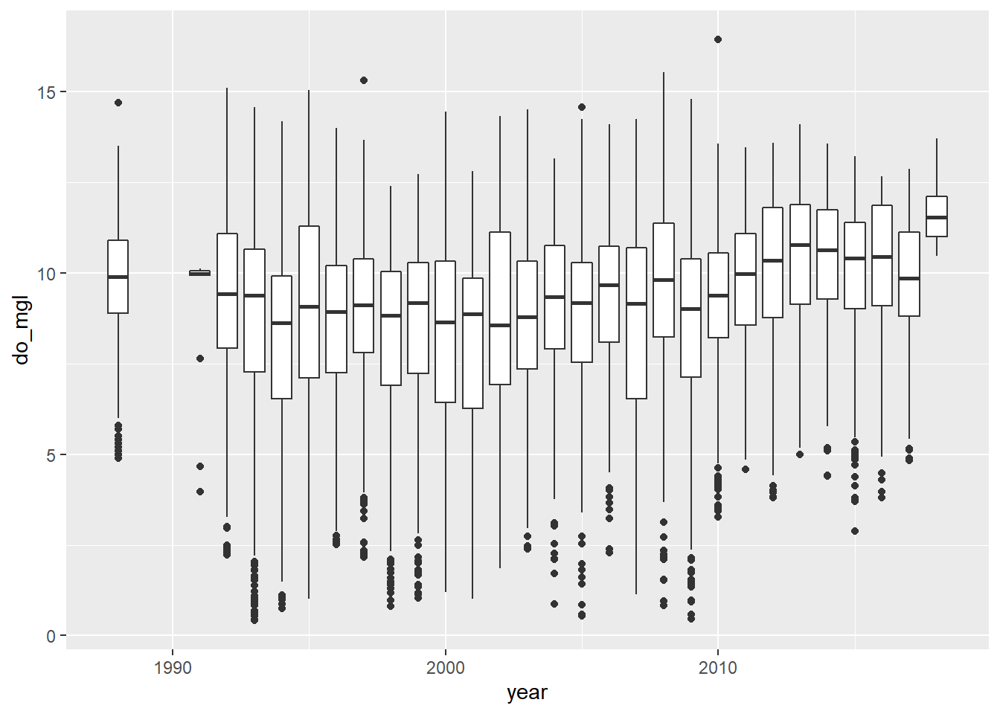
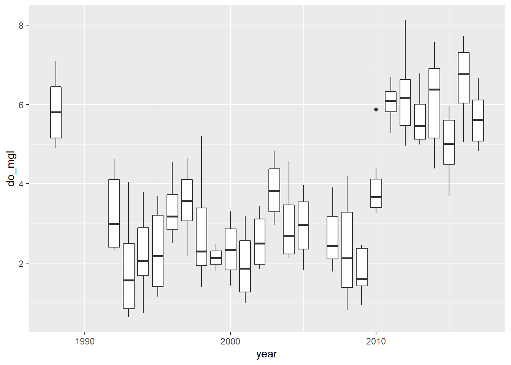
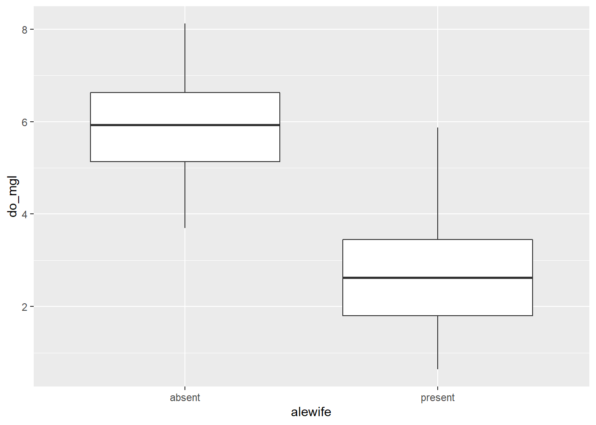

Data manipulation and visualization

Introduction
The objective of this assignment is to reinforce your ability to use tools that you learned about in Chapter 3 and Chapter 4 get you started developing necessary skills in data manipulation and visualization. We will continue to build these skills and integrate them into statistical analyses in later chapters.
By the end of this assignment, you should be comfortable: 1) reading data into R, 2) conducting some basic data manipulation, 3) generating new variables deterministically and stochastically, and 4) creating and modifying basic plots.
Exercises
Packages
We’re going to work with the dplyr, ggplot2, and magrittr packages for this assignment, so you can go ahead and put some code in your homework script to load them both from the library where they were installed on your computer. If you installed them with the tidyverse, you can go ahead and load the whole thing.
Data import
Read the data from physical.csv into R using the read.csv function. If you saved your homework script in the same directory as the data, then you can just run dir() to see the file names and copy and paste from the output into your read.csv function so you don’t mess up the name. The header = TRUE tells R that our columns have names in the first row.
If you have gotten this far and have not saved your homework script, please do so now.
Data explanation
From Chapter 4.2: These are data collected each year from Otsego Lake by students, staff, and faculty at the SUNY Oneonta Biological Field Station in Cooperstown, NY, USA. The data set includes temperature (°C), pH, dissolved oxygen, and specific conductance measurements from a period of about 40 years. There are all kinds of cool spatial and seasonal patterns in the data that we can look at.
We will use do_mgl for the examples that follow. This variable is a measure of the amount of dissolved oxygen available in the water at each depth on each day of the data set. Dissolved oxygen is important for supporting aerobic organisms that can’t produce their own food through photosynthesis (e.g. aquatic bugs, clams, fish). It has been measured along with other water characteristics to help monitor changes in the lake due to watershed and in-lake management as well as introduced species or climate change.
One of the biggest changes to Otsego Lake in the last several decades was a reduction in the amount of dissolved oxygen in the deepest water (hypolimnion). A primary cause of this reduction in dissolved oxygen was the introduction of an invasive fish, the alewife (Alosa pseudoharengus). Alewife are really good at eating the microscoping animals (zooplankton) that graze on algae. When they were introduced, the alewife population increased rapidly and basically ate all of the microscopic crustaceans that eat algae. This allowed algae to grow out of control during the summer. Once the algae dies each year, it sinks to the bottom of the lake where it is decomposed by aerobic organisms that use up oxygen deep in the lake. The amount of oxygen available is fixed from about June until December each year until seasonal changes cause all of the water to mix together again. This means that the lowest oxygen levels were occuring in the deepest water around October or November each year. Oxygen levels got so low because of this that the deep, cold water needed by popular sportfish such as lake trout (Salvelinus namaycush) did not have enough oxygen to support them. Therefore, the New York State Department of Environmental Conservation (NYSDEC), SUNY Oneonta Biological Field Station, Otsego Lake Association, and others began stocking walleye (Sander vitreus) to eliminate the alewife. What a hot mess, huh?!
It turns out that NYSDEC et al. were actually successful in eliminating the alewife. Well, sort of. It is kind of a messy story thanks to the subsequent introduction of invasive zebra mussels (Dreissena polymorpha) in 2008, but as you’ll find out in your literature readings, that’s ecology.
For this assignment, we will weed through about 30 years of data to summarize changes in dissolved oxygen in Otsego Lake during the last 30 years. But, to get there we’ll need to do some data munging and some quality-control to assure that we know what we’re working with. These steps are pretty typical for most data sets you’ll run into, and are a critical part of experimental design and the statistical analyses that we’ll conduct later.
First steps for data
I constantly forget about the fancy point-and-click tools that RStudio brings to the table. Make sure that you look at your data structure in your Environment tab or using the str() function.
You can also use the built-in function summary() to get a closer look at your data.
Once you’ve taken a look at the data, let’s check out some specifics.
Question 1. How many (unique) years are included in this data set? If you are stuck look back to how we did this in Chapter 2 and Chapter 3. Or, Google it. (Note that I am not asking you for the range of years (1988-2018) because some years lack data.)
Next, calculate the mean dissolved oxygen do_mgl throughout the water column each year. You can use the approach demonstrated in Chapter 3.4.
Don’t forget to assign this to a new object!
Here is what this would look like using the %>% operator. Remember that the purpose of this is to allow us to pass the results of one function directly to another so we don’t have to create intermediate objects.
# This will do it all at once!
ann <- # Front-end object assignment
otsego %>% # Pass otsego to the group_by function
group_by(year) %>% # Group by year and pass to summarize
summarize(avg = mean(do_mgl))But, it can be a little confusing to get dive right in like this. If you are not yet comfortable with the %>% (pipe) operator from the magrittr package, you could do also go step by step using the group_by() and summarize() functions:
tempdf <- group_by(otsego, year) # Create data frame to hold grouped data
ann <- summarise(tempdf, avg = mean(do_mgl)) # Summarize mean do_mgl by yearYou’ll notice that if you try to print ann to the console, it does not display the whole object. If you’d like to see the whole thing, you can still use View(ann) to open it in the data viewer.
Have a look at it…
Missing data and R
Uh-oh, looks like something went wrong! We have a whole bunch of NA values in our data!
Most of the time this is not a big deal, but the default behavior for some functions, such as mean() and sd() will return NA if any of the values in a column are NA. This is good because it lets us know something is funky, but we need to dig a little deeper to figure out why.
Question 2. How many of the values in the column avg of ann are NA? You can find this multiple ways.
Question 3. To which years do these correspond? Again, you can find this multiple ways.
The next question we need to answer here is, “Why do we have NA values in ann$avg for some years but not for others?” To answer this, we need to go back to the original data frame, which I named otsego.
Subset the otsego data to get only those data from one of the years above that had an NA in out. If you are having trouble remembering how to do this, have a look back at Chapter 3.3 of the text.
I am going to use 1993 to demonstrate how to do it using one method from base R. You must use a different year for the questions that follow.
Question 4. Which year did you pick for this?
Question 5. Are there any values of do_mgl in the subset that you created which are not NA?
Okay, now we know that the problem here is just that we are missing some data for some depths and years. Next we need to find out how many of the data points are NA to determine if this could influence analyses down the road.
You could find out how many of these are missing by using a combination of is.na and which, replacing ... with the name of the object you want to query (the column do_mgl in the dataframe otsego).
Question 6. How many NA values are in the column do_mgl of otsego?
Now that we now why we were getting NA values and we know we don’t have that many, we can go ahead and tell R to remove those from our data summary ann. Let’s do it again from the start. This time, we will add na.rm = TRUE inside the call to mean() in the last step of our data pipeline. I am going to overwrite ann with this change to avoid cluttering up my workspace. You can name it something different if you want, but pay attention because you’ll still have ann in your workspace unless you remove it with the rm() function (see here or type ?rm).
ann <- # Front-end object assignment
otsego %>% # Pass otsego to the group_by function
group_by(year) %>% # Group by year and pass to summarize
summarize(avg = mean(do_mgl, na.rm = TRUE))Now, you should have a numeric value of mean do_mgl in Otsego Lake for each year in an new tibble called ann for which there were data! Have a look at ann to confirm that this is true before moving on.
Subsetting
Now that we have a handle on what the data look like we can start to look at some of the trends in dissolved oxygen that I mentioned earlier.
Make a boxplot of do_mgl by year in the otsego data using one of the methods from Chapter 4. I know that this is data visualization, not subsetting (please don’t post it as an issue!).
I am going to make a quick box plot using the ggplot2 package to see how do_mgl changes across years.
Now, we make the boxplot:
bp <- ggplot(otsego, aes(x = year, y = do_mgl)) +
geom_boxplot(mapping = aes(group = year))
print(bp)
You probably got a warning message from this about non-finite values. This is because the otsego data had NA values in it. This will not affect your plot except that it is ignoring NA values for do_mgl, the ramifications of which we’ve already discussed in the context of data management.
More importantly, if you look at the trends in dissolved oxygen here they don’t really match the story I told you (I guess maybe if you squint). Remember that this data set currently has data from the entire water column, and we are only really interested in what happened to dissolved oxygen in the deepest part of the lake during fall, when oxygen levels fall below critical levels needed by aerobic organisms at the bottom of the lake. Therefore, we need to subset the data to look at just the part in which we are interested.
Let’s get just those data where depth is greater than 40 meters (about 120 ft) in the month of October (late autumn before mixing occurs) to see if we can make out that trend a little more clearly.
hypo <- # Front-end object assignment
otsego %>% # Pass otsego to the subset function
subset(depth > 40 & month == 10) # Select depths > 40 m in OctoberQuestion 7. How many rows are left in your new data frame (the one that I called hypo)?
Now that you’ve taken a look at your data, go ahead and make another quick box plot of do_mgl by year.

Alright! This looks a lot more like the story I was telling you at the start of the homework assignment. If only the graph did it justice…don’t worry, you’ll have to make it pretty at the end.
Creating a new variable
Okay, our subsetting approach seems to have done the trick in terms of narrowing the window for the range of data in which we are interested. What, now, if we wanted to visualize the differences in dissolved oxygen during years with alewife (let’s say 1992 through 2010) and years without alewife (2011 and later)? Glad you ask!!
We’ll drop the 1988 data because it was around that time that alewife were introduced. Here, I am just going to overwrite the hypo data frame (shameful, I know).
Now that we have just the “alewife” and “post-alewife” years in our data, we can go ahead and assign each of the years to one of these two groups using a 2010 cut-off year.
Create a new column in hypo that will hold a grouping variable for alewife. I initialize this by assigning it the value present for all rows. Note that I only supply a single value, but R knows to repeat this for each row in the data frame.
Next, we’ll modify hypo$alewife to replace “present” with “absent” for all years after 2010!
Question 8. Using your this new data set, calculate the mean do_mgl in years were present or absent. There are a number of ways to do this. If you are struggling have a look at the examples using group_by and summarize from the dplyr package in Chapter 3.4
Make it pretty
Okay, let’s wrap it all up this week by making a nice plot to visually compare hypolimnetic oxygen (hypo$do_mgl) between years in which alewife was "present" or "absent".
Here is the basic plot to get you started:
bp <- ggplot(hypo, aes(x = alewife, y = do_mgl)) +
geom_boxplot(mapping = aes(group = alewife))
print(bp)
Next, I want you to modify this box plot using some of the examples shown in Chapter 4.3.4.
Question 9. Choose at least 5 components of this graph to modify. Examples could include themes, colors, chart titles, axis labels, tick (group) labels, or more. I just want you to dig in and get creative here. Report (in your own words) each of the five changes that you made as the answer and show me the money…I mean the plot. Show me the plot. You don’t have to paste the plot in your answer. I’ll see it when I run your awesome code.
Question 10. Based on your box plot, and your answer to Question 9, do you think these groups are different? Note, I am still not asking you to do any statistical tests yet. I just want you to think about the kinds of comparisons we will make in a couple weeks.
This work is licensed under a Creative Commons Attribution 4.0 International License. Data are provided for educational purposes only unless otherwise noted.